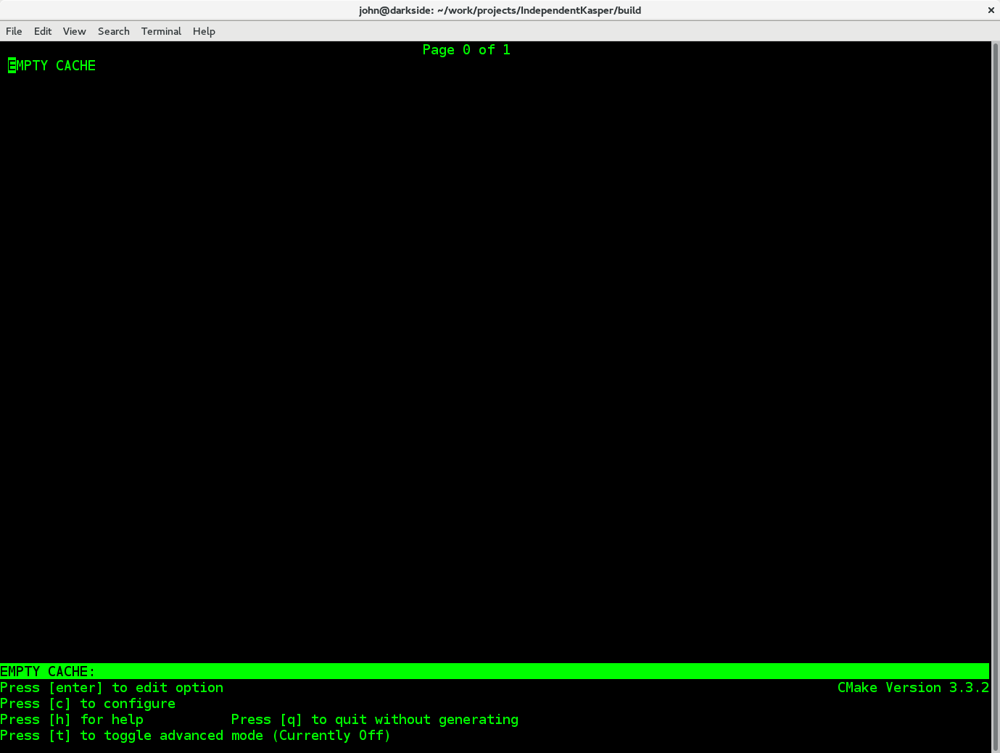

Getting starting with Kassiopiea¶
Downloading the code¶
The most recent version of Kassiopeia and its accompanying libraries can be found on its public github page located at:
https://github.com/KATRIN-Experiment/Kassiopeia
To obtain the code you may either download a .zip file containing the compressed source files from:
https://github.com/KATRIN-Experiment/Kassiopeia/archive/master.zip
or, alternatively, use git to clone the repository with the following command:
$ git clone https://github.com/KATRIN-Experiment/Kassiopeia.git
The use of git is generally the preferred method as this will allow you to easily obtain updates and bug fixes without needing to download a fresh copy of the source. This can be done simply by executing the command:: $ git pull from within the source directory. If you do not have the git software you may install it on a Debian/Ubuntu Linux system through the package manager with the the following command:
$ sudo apt-get install git
Supported operating systems and hardware requirements¶
Kassiopeia is supported and intended to run on systems running either Linux or MacOS X. Currently, it has been compiled and tested to run on fresh installations of the Linux distributions Debian 8.6 and Ubuntu 16.04.1 LTS. It is also expected to compile and run on other Linux distributions, however this has not been tested, and the steps needed to compile Kassiopeia may deviate from what is outlined here.
For minimal functionality and the ability to run the included example programs and simulations the following computer specifications or better are recommended:
- Architecture: x86-64
- CPU: Intel Core i3 @ 2.0 GHz
- RAM: 4 GB
- Free Disk Space: 10 GB
Required software dependencies¶
Kassiopeia has been designed with an eye towards keeping reliance on external software packages and libraries to a minimum. That being said, there are a few packages which are required in order to build the software the comes in Kassiopeia distribution. The first and most obvious is a C/C++ compiler which is new enough to support the C++11 standard. The two recommended compilers are gcc/g++ and clang. The minimum required versions are gcc 4.6 and clang 3.0. Secondly, in order to build Kassiopeia, GNU make and cmake version 2.8.6 or greater is needed. The Kassiopeia build system is based on the flexible cmake system which can be configured by the command line. However, it is extremely useful to install the command line curses-based cmake GUI interface in order to easily configure optional dependencies.
On a Debian/Ubuntu Linux system the minimum software packages required by the Kassiopiea build system can be installed through the use of the package manager through the following command:
$ sudo apt-get install build-essential cmake cmake-curses-gui
Beyond the build system, there are only two software packages which could be considered absolutely required dependencies, GSL and ROOT (though this is not strictly true, if the user only wishes to compile KEMField).
The GNU scientific library (GSL), which is a collection of extremely useful numerical routines. We recommend compiling and installing GSL from the source if possible. However, the necessary libraries can be installed on Debian/Ubuntu linux with following command:
$ sudo apt-get install libgsl-dev
The second required dependency is the ROOT software from CERN. While ROOT is not strictly required (e.g. if you are only interested in using Kassiopeia as a library for some external application), it does feature quite heavily as a means of saving simulation output data. Therefore, if you plan on saving the results and performing any analysis of Kassiopeia simulation results you will need to install ROOT.
It is recommended that you install ROOT by downloading and compiling the source code according to the instructions on the CERN website. Kassiopeia requires ROOT to be built with XML support, and ROOT itself requires the X11, Xft, Xpm, and Xext development libraries. You may install the minimal set of development packages needed by ROOT on Debian/Ubuntu Linux by running the following command:
$ sudo apt-get install libx11-dev libxpm-dev libxft-dev libxext-dev libxml2-dev
After compiling and installing ROOT, in order to compile Kassiopeia on Linux,
your $PATH and $LD_LIBRARY_PATH environmental variables should be configured such that you can
run the executables root and root-config from the command line. The configuration of
these environmental variables is typically handled by ensuring that
the script thisroot.sh (distributed with the ROOT source code) is executed upon login. On Linux
this an be done by adding the following (with the appropriate change to the file path)
to your login script (~/.bashrc file):
#Set up the ROOT environmental variables
source <path-to-ROOT-install>/bin/thisroot.sh
Once you have GSL and ROOT installed, if you do not require any additional features, you can then proceed with configuring and compiling Kassiopeia.
Compiling the code using CMake¶
After installing the required dependencies,
compiling a basic plain-vanilla version of Kassiopeia, with no extra features
is a relatively simple process. For the sake of simplicity, this guide will
assume that the Kassiopeia source code is located in the user’s home directory
in ~/Kassiopeia.
To start, first cd into Kassiopeia’s source directory
and create a build folder to hold the temporary files that will be created during compilation
by executing the commands:
$ cd ~/Kassiopeia
$ mkdir ./build
$ cd ./build
Before running cmake, consider if you have a preference for which compiler is used.
You may select the compiler by setting the environmental variables CXX and CC.
For example, for clang you should set them to:
export CXX=clang++
export CC=clang
while for the gcc toolchain use:
export CXX=g++
export CC=gcc
Once you are within the build directory, you may bring up the cmake configuration GUI by typing:
$ ccmake ../
You will be presented with screen which looks like this:
{kind=link}
Hit c to configure the build, this will lead to a screen as below.

At this point you may either accept the default values or
use the arrow keys to select which option you wish to change. Press the enter key
to activate/deactive an option for modification. The installation directory
for the Kassiopeia software can be specified by setting the value of
the option CMAKE_INSTALL_PREFIX. Once the configuration variable are set
or if you accept the defaults, hit c to configure again, and then g to generate
the make file and exit. Once the make file
is generated, you can compile and install Kassiopeia by simply executing:
make && make install
As compilation can take some time, you may use multiple CPU cores to accelerate the compilation,
by passing make the -j option (e.g make -j 4 install to compile using four CPU cores).
Directory structure and environmental variables¶
Once compiled, the complete set of Kassiopiea executables and configuration files will be found in the specified installation directory. The installation directory is broken down into several components, these are:
- bin
- cache
- config
- data
- doc
- include
- lib
- log
- output
- scratch
The Kassiopeia executable can be found under the bin directory. Also in this directory
is the script kasperenv.sh, which can be used to configure all the necessary environmental variables
needed to run Kassiopeia, by executing source ./kasperenv.sh at the command prompt.
The bin directory also contains other executables useful for interacting with the sub-components of
Kassiopeia such as the KEMField or KGeoBag libraries.
The lib directory contains all of the compiled libraries, as well as cmake and pkgconfig modules to enable
linking against Kassiopeia by external programs. The include directory contains all of the header files
of the compiled program.
The other directories: cache, config, data, doc, log, output, and scratch are all further sub-divided
into parts which relate to each sub-module of the code: Kassiopeia, Kommon, KGeoBag, or KEMField. The
cache and scratch directories are responsible for storing temporary files needed during run time for
later reuse. The data directory contains raw data distributed with Kassiopeia needed for certain calculations
(e.g. molecular hydrogen scattering cross sections). The log directory provides space to collect logging output
from simulations, while the output directory is where simulation output is saved unless otherwise specified.
Once you have finished installing Kassiopeia and setting up the appropriate environmental variables you can attempt to run it (without arguments) by doing:
cd <path-to-Kassiopeia-install>/bin/
./Kassiopeia
The output of which should be:
usage: ./Kassiopeia <config_file_one.xml> [<config_file_one.xml> <...>] [ -r variable1=value1 variable2=value ... ]
If you receive error (either immediately, or at some later time) starting with the following:
[INITIALIZATION ERROR MESSAGE] variable <KASPERSYS> is not defined
then you need to (re)execute the kasperenv.sh script to ensure the environmental variables are set up properly.
In order to auto-initialize these environmental variables upon login, the user
may add the following:
#Set up the Kassiopeia environmental variables
source <path-to-Kassiopeia-install>/bin/kasperenv.sh
to their login (~/.bashrc) script.
Configuring optional dependencies¶
Kassiopeia has a plethora of optional dependencies which provide additional capabilities and enhance the performance of the software. This optional dependencies are configurable through the cmake GUI interface. However, some of these optional settings require additional libraries or special hardware in order to operate.
The use of some external libraries, (e.g. ROOT and VTK) is collectively toggled for all sub-modules at once. The Kassiopeia simulation software can link against these libraries using the Kasper flags outlined in the table below:
| Collective options | ||
|---|---|---|
| CMake option name | Required software | Description |
| Kasper_USE_BOOST | Boost developer libraries | Build Boost dependent extensions. |
| Kasper_USE_GSL | The GNU scientific library (GSL) | Build GSL dependent extensions |
| Kasper_USE_ROOT | The CERN ROOT libraries | Build ROOT dependent extensions. |
| Kasper_USE_TBB | Intel (TBB) thread building blocks | Build TBB based parallel processing tools. |
| Kasper_USE_VTK | Kitware’s visualization toolkit VTK | Build advanced tools for visualization. |
By default, the Kasper_USE_ROOT and Kasper_USE_GSL flags are turned on,
reflecting their importance for the default configuration of Kassiopeia.
Toggling of additional optional dependencies is very granular and may be enabled/disabled for the individual sub-modules: (Kassiopeia, Kommon, KEMField, or *KGeoBag). It is important to note changes in one sub-module may affect others since there is some interdependence between optional features across sub-modules. This is automatically accounted for by the cmake system in order to prevent situations where prerequisites are missing. To summarize the possible optional dependencies that are available, they have been divided according to the sub-module(s) which they modify. For performance reasons all of the sub-modules explicitly allow the toggling of debugging messages (which are disabled by default).
The Kassiopeia sub-module has a rather limited set of additional options, which is:
| Kassiopeia options | ||
|---|---|---|
| CMake option name | Required software | Description |
| Kassiopeia_ENABLE_DEBUG | None | Enable Kassiopeia debugging messages. |
The optional dependencies the Kommon sub-module are given in the following table:
| Kommon options | ||
|---|---|---|
| CMake option name | Required software | Description |
| Kommon_ENABLE_DEBUG | None | Enable Kommon debugging messages. |
| Kommon_USE_Log4CXX | Apache Log4CXX library | Enable enhanced logging tools. |
The additional optional dependencies of the KGeoBag module are as follows:
| KGeoBag options | ||
|---|---|---|
| CMake option name | Required software | Description |
| KGeoBag_ENABLE_DEBUG | None | Enable KGeoBag debugging messages. |
| KGeoBag_ENABLE_TEST | None | Build developer test executables. |
KEMField has a rather extensive set of additional compiler options so that it maybe adapted for use on special purpose machines (computing clusters, GPUs, etc.) for field solving tasks. These are listed as follows:
| KEMField options | ||
|---|---|---|
| CMake option name | Required software | Description |
| KEMField_ENABLE_FM_APP | None | Build fast-multipole library applications. |
| KEMField_ENABLE_FM_TEST | None | Build fast-multipole developter tests. |
| KEMField_ENABLE_TEST | None | Build developer tests. |
| KEMField_SILENT | None | Suppress all debugging output. |
| KEMField_USE_CUDA | The CUDA developer toolkit | Enable CUDA extensions for NVidia GPUs. |
| KEMField_USE_FFTW | The FFTW fast Fourier transform library | Enable use of FFTW (conflicts with OpenCL). |
| KEMField_USE_GSL | The GNU scientific library (GSL) | Enable GSL dependent extensions, enables CBLAS. |
| KEMField_USE_KGEOBAG | KGeoBag | Enable geometric modeling and boundary meshing. |
| KEMField_USE_KMESSAGE | Kommon | Fancy debugging messages from Kommon. |
| KEMField_USE_KOMMON | Kommon | Enable Kommon dependent extensions. |
| KEMField_USE_KOMMON_BINDINGS | Kommon | Enable XML bindings. |
| KEMField_USE_MPI | An MPI implementation (e.g. OpenMPI or MPICH) | Enable multi-processing using MPI. |
| KEMField_USE_OPENCL | The OpenCL headers and library | Enable use of GPU/Accelerator devices. |
| KEMField_USE_ZLIB | The ZLIB compression library | Use ZLIB for compression, default is miniz. |
It should be noted that if you have any interest in visualizing the data output from a Kassiopiea simulation, the use of the VTK toolkit is highly recommended.